Liwa International Festival · Al Dhafra, Abu Dhabi · 26 December 2019 to 10 January 2020
A helmet.
Everyone gets ready.
The festival's television commercial, 2020, made under my direction. The rider and the driver are performers. Car makes in it are not clients.A hand on the throttle.
Five lights. Ready?!
4 to 20 seconds of the 61-second film. It follows your scroll.Liwa International Festival · Al Dhafra, Abu Dhabi · 26 December 2019 to 10 January 2020
A helmet. A hand on the throttle. Five lights. Ready?!
The festival's television commercial, made under my direction. The rider and the driver are performers.
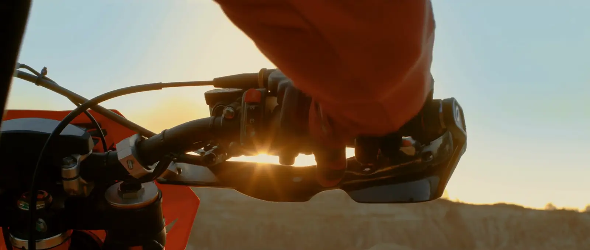
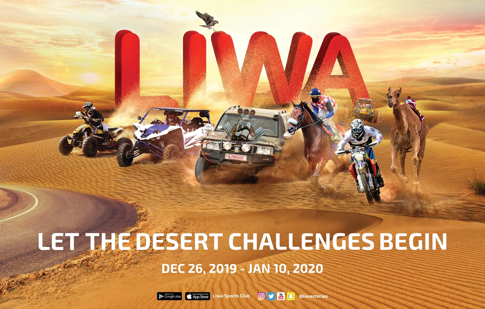
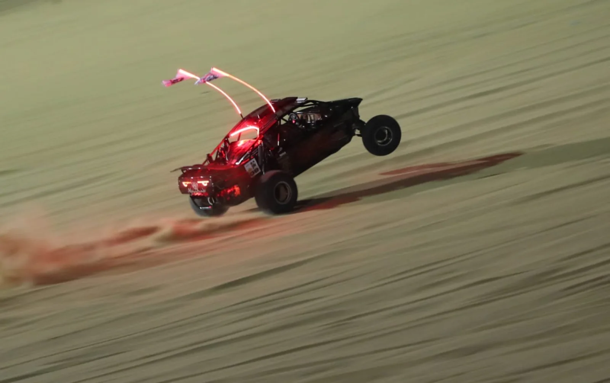
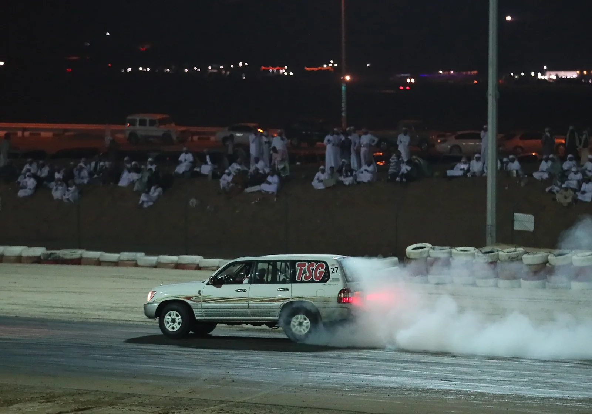
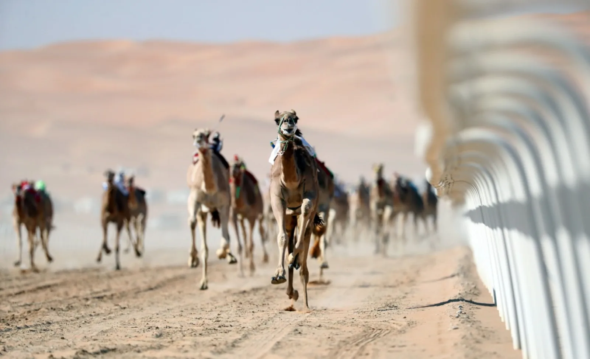
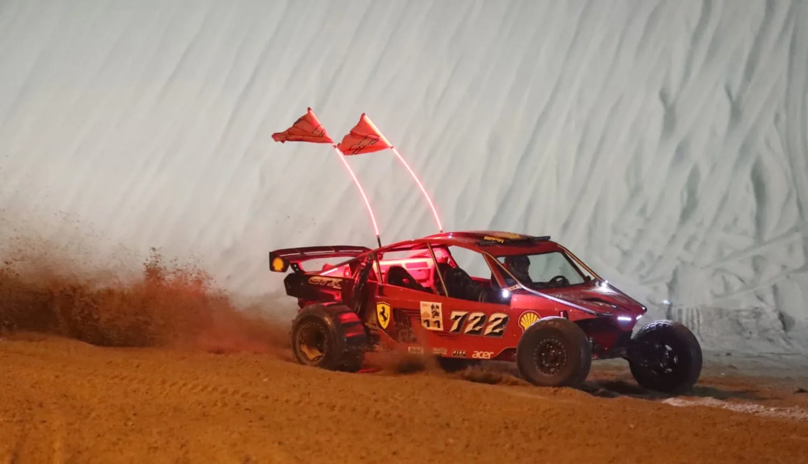
One question on everything.
I led the campaign and its look for Abu Dhabi Sports Council, in Arabic and English.
Buggies.
Drifting.
Horses.
Sixteen days on the same sand.
The festival's established mark was inherited, not drawn by us.One question on everything.
I led the campaign and its look for Abu Dhabi Sports Council, in Arabic and English. Buggies, drifting, horses: sixteen days on the same sand.
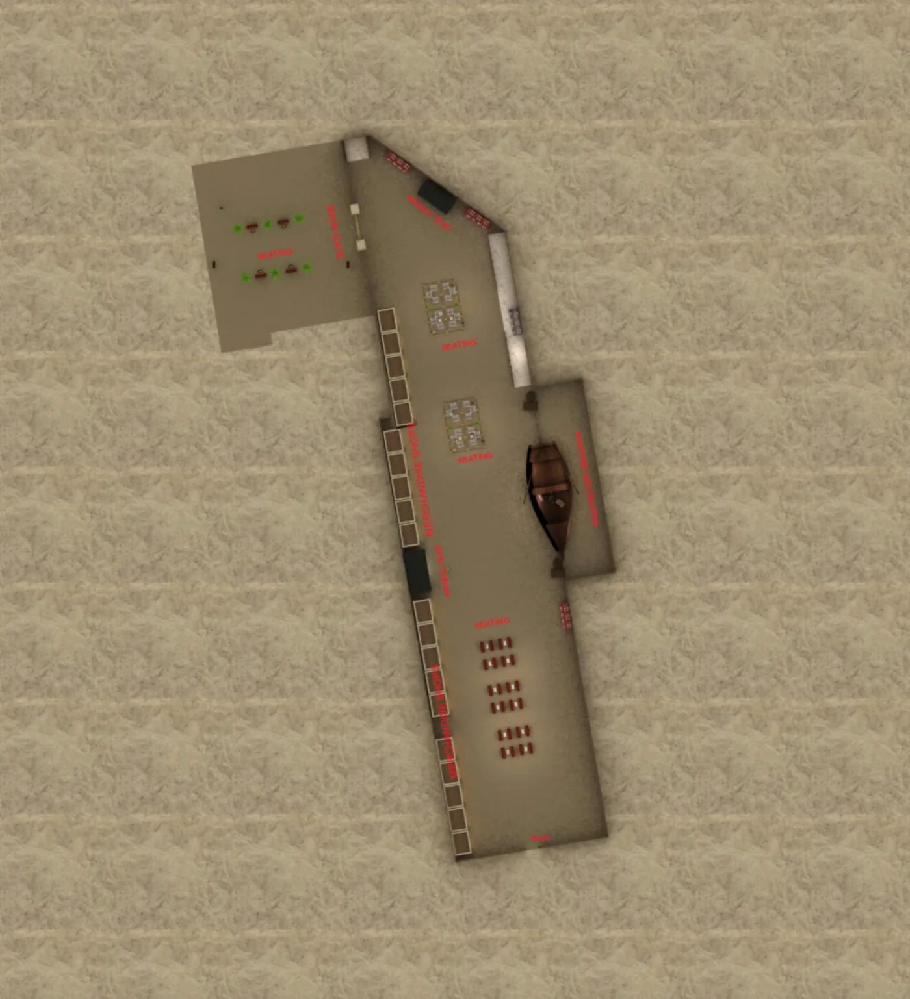
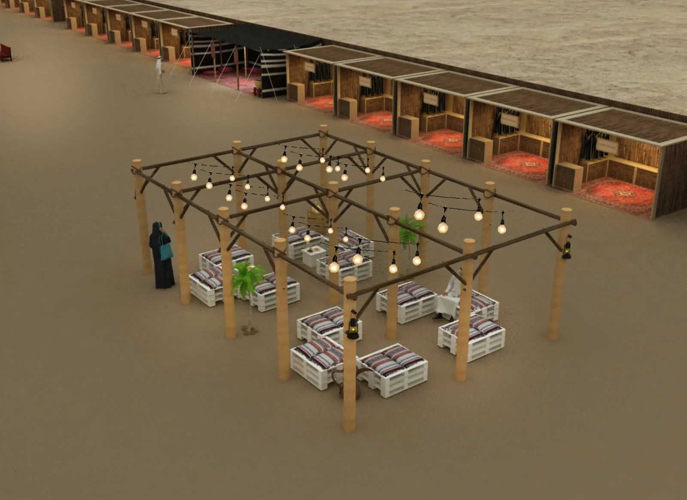
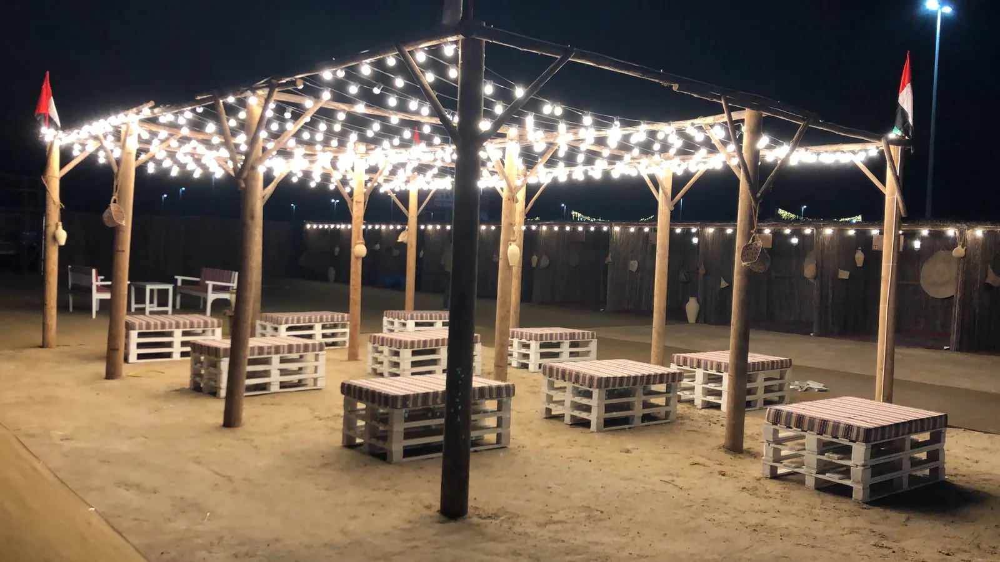
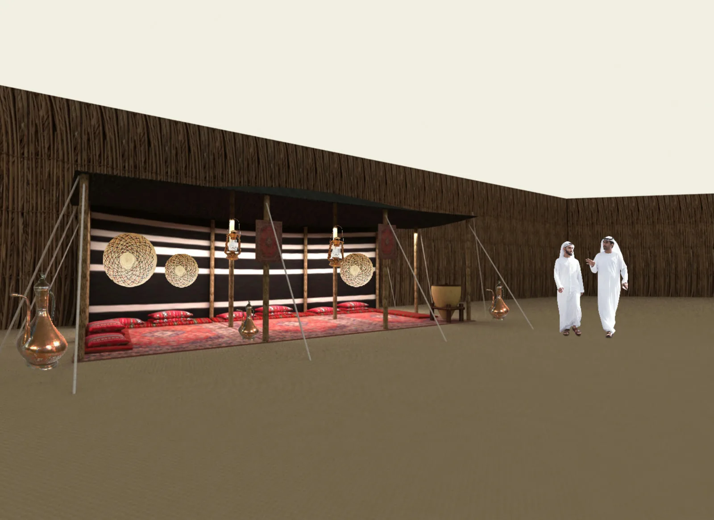
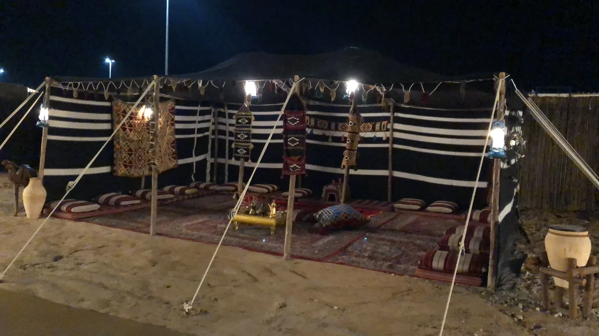
Then the plan.
A heritage village, a cafe, a cinema and a children's zone, drawn before the trucks left.
I drew it. We built it on open sand.
The majlis, drawn and lit.
My scope was these areas, the campaign and on-site management, through AntBrush. The races and the festival itself were run by its organisers.Then the plan. I drew it. We built it on open sand.
A heritage village, a cafe, a cinema and a children's zone. My scope was these areas, the campaign and on-site management, through AntBrush.
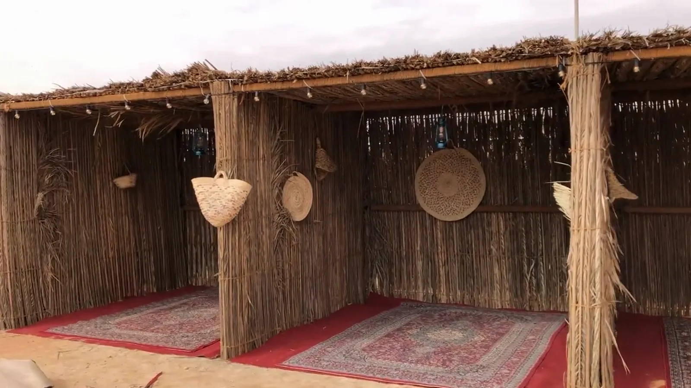
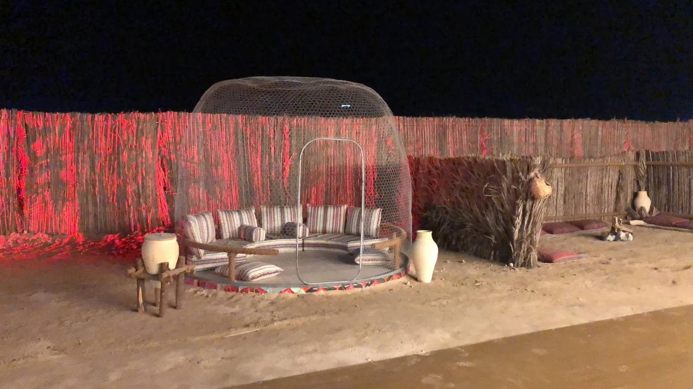
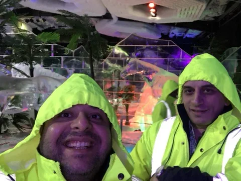
The souq, built on the sand.
I stayed on the sand until it opened.
The souq, built on the sand.
I stayed on the sand until it opened.
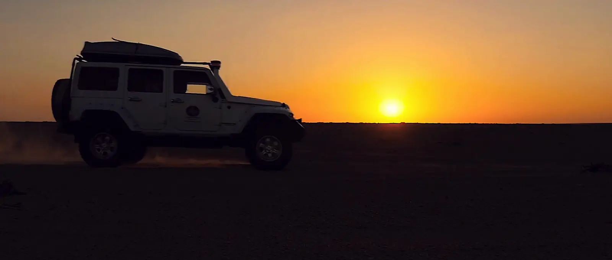
Liwa International Festival
- When, where26 December 2019 to 10 January 2020. Tal Moreeb, Al Dhafra, Abu Dhabi.
- ForAbu Dhabi Sports Council.
- My partCreative direction and production, through AntBrush, my studio: campaign and look, the commercial, heritage village, Liwa Land, Desert Cafe, outdoor cinema, signs and tickets, on-site management.The festival and its races were run by its organisers.
- In the picturesCar and drink makes that appear are not clients.
What you saw: frames of the television commercial · the campaign key visual · festival photography · concept renders beside photographs of the built areas · one photograph of me on site.